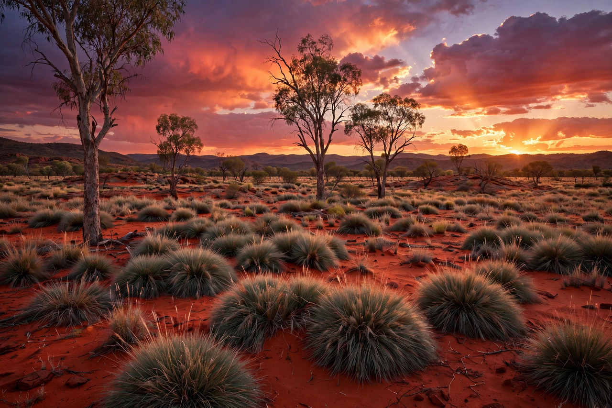

| Northern Territory | |
|---|---|
 | |
| Country | Australia |
| Capital (and largest city) | Darwin |
| Area | 1,419,630 km² (3rd largest) |
| Population | about 250,000 (approx.) |
| Self-government | 1 July 1978 |
| Time zone | ACST (UTC+9:30) |
The Northern Territory (abbreviated as NT) is an Australian internal territory in the central and central northern regions of Australia. The Northern Territory shares its borders with Western Australia to the west, South Australia to the south, and Queensland to the east. To the north, the territory looks out to the Timor Sea, the Arafura Sea and the Gulf of Carpentaria. Despite its large area — over 1,419,630 square kilometres (548,120 sq mi), making it the third-largest Australian federal division — it is sparsely populated, with a population of roughly a quarter of a million.
The tropical "Top End" includes the capital, Darwin, and Kakadu National Park, famous for its wetlands, waterfalls and Aboriginal rock art. The arid centre, around Alice Springs, is part of Australia's outback "Red Centre". The territory contains Uluru (Ayers Rock), perhaps Australia's most famous natural landmark, within Uluṙu-Kata Tjuṯa National Park, and the domed Kata Tjuta (the Olgas) nearby.
Aboriginal Australians have lived in the region for at least 60,000 years, and the territory has the highest proportion of Indigenous people of any Australian jurisdiction — around a quarter to a third of its population. The British attempted settlements on the north coast from the 1820s before Palmerston (later Darwin) was founded in 1869. The territory was administered by South Australia from 1863 until its transfer to the Commonwealth in 1911. Darwin was bombed by Japanese aircraft in 1942 and devastated by Cyclone Tracy in 1974.
The territory gained self-government in 1978 but remains a territory rather than a state; a 1998 referendum on statehood was narrowly defeated. Its economy is driven by mining (including uranium, gold and bauxite), energy, tourism, defence and pastoralism. The Adelaide–Darwin railway was completed in 2004.